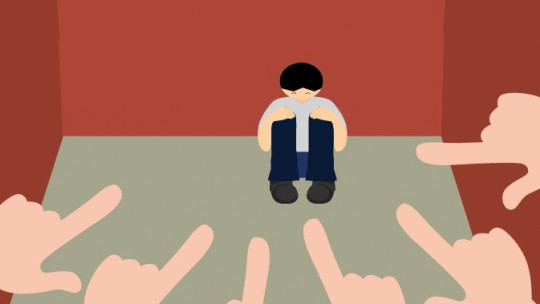

La violencia escolar engloba agresiones físicas, verbales, psicológicas o virtuales (ciberacoso) entre miembros de la comunidad educativa, ocurriendo dentro o alrededor del centro. Afecta el aprendizaje y bienestar, siendo el acoso/bullying una de sus formas principales, caracterizado por su repetición intencional, desequilibrio de poder y severas consecuencias emocionales.
Tipos de violencia escolar
